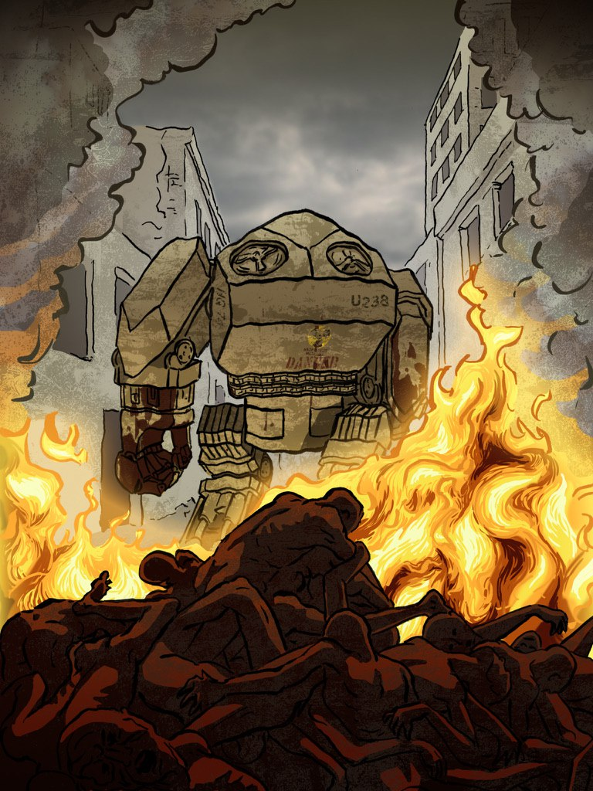
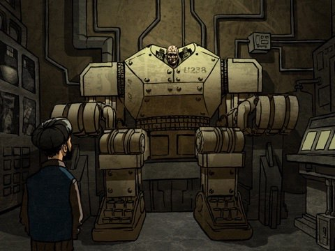
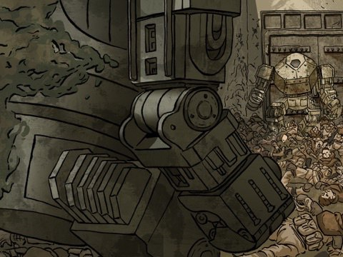
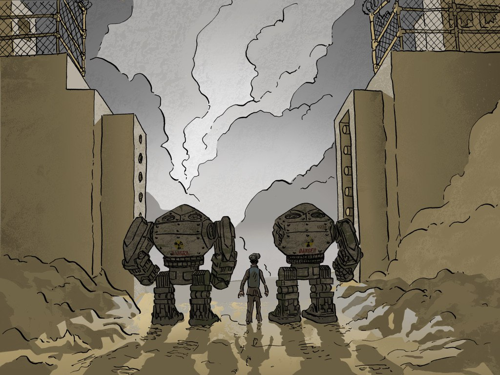
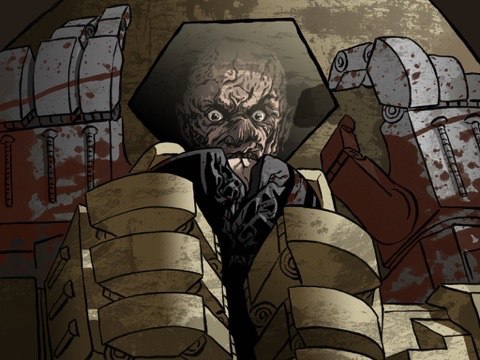
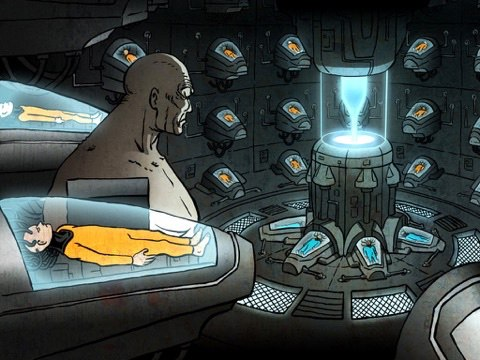
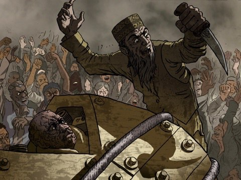
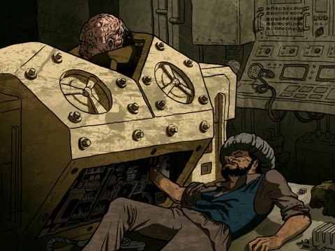
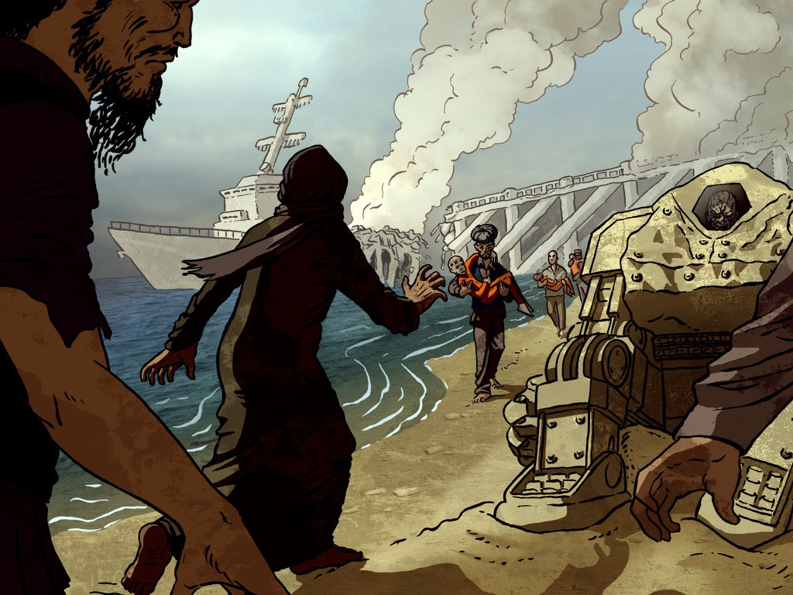

The Northern Star Trilogy

The oil is gone. That way of life, ended. An invention frees the mind. A cyber-world becomes salvation. A boy, a weapon. A soldier, a titan. While nations thrash into antiquity, And a CEO becomes Queen, A man, brilliant and cunning, Plots to rule it all.

The giant is ill. His daughter in peril. Her bastion a psycho. The worlds torn asunder. War is fueled by want, subversion by greed. What value is Free Will, if you can be reborn as a god?

The ancient giant hopes to die. His existence festers like a plague. The love he's lost, and the debts he's paid. The death he's dealt, and the waste he's laid. But one last chance to right one wrong. One last march into the fray. Together, they can kill the god. And set his daughter free.
The Seethe

In the vast forests of the Pacific Northwest, amidst the hard-living community of loggers and miners, Kacey Edwards strives to break the cycle of her family's dreamless life. When a mysterious event causes mass death in the Pacific Ocean - and the following day wipes out cities - she learns that what has happened is only the beginning. It will take everything she has to protect her family, her friends, and find some way - against all odds - to survive.
The World of The Northern Star















About the Author
Mike Gullickson's debut novel, the cyberpunk bestseller The Northern Star: The Beginning, was hailed by Examiner in 2013 as one of "The Top 5 Indie Published Books You Haven't Read But Should." For its sequel, Midwest Book Review stated "…it's military sci-fi and futuristic cyber-reality at its best." And in reviewing the final novel, The New Podler Review of Books stated that "the whole series is a science fiction masterpiece."
Mike has been interviewed as a bionics expert on Lieberman Live! (SiriusXM Howard 101) and featured on Netheads (a Kevin Smith SModcast).
The Northern Star trilogy is currently being shopped by Solipsist Film (Sin City: A Dame to Kill For, Metro 2033, Instinct) to be made into a major motion picture.
The Seethe was Mike's attempt at a YA novel. It's… not.
Mike lives in Manhattan Beach, California with his wife and two children.